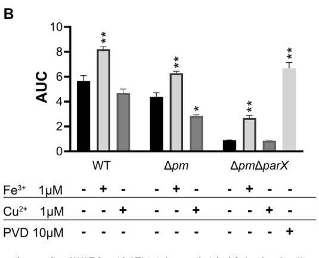

opmQ encodes the outer-membrane component of the PvdRT-OpmQ tripartite efflux system involved in pyoverdine secretion and recycling.
Definition: Enables export of pyoverdine across a membrane as part of a siderophore efflux system.
Justification: OpmQ has experimental support for pyoverdine secretion, but GOA can only represent this with broad efflux transporter and siderophore transport terms. A pyoverdine-specific efflux activity would capture the substrate specificity of PvdRT-OpmQ.
Parent term: efflux transmembrane transporter activity
Supporting Evidence:
| GO Term | Evidence | Action | Reason |
|---|---|---|---|
|
GO:0009279
cell outer membrane
|
IEA
GO_REF:0000044 |
ACCEPT |
Summary: OpmQ is correctly localized to the cell outer membrane.
Reason: OpmQ is the outer-membrane component of the PvdRT-OpmQ tripartite efflux system, so this location is core to its function.
Supporting Evidence:
file:PSEPK/opmQ/opmQ-uniprot.txt
outer membrane component, OpmQ
file:PSEPK/opmQ/opmQ-goa.tsv
GO:0009279 cell outer membrane
file:PSEPK/opmQ/opmQ-deep-research-falcon.md
OpmQ is functionally assigned to the **outer membrane** as the OMF/OMP component of a tripartite exporter.
|
|
GO:0015562
efflux transmembrane transporter activity
|
IEA
GO_REF:0000002 |
ACCEPT |
Summary: Efflux transmembrane transporter activity is the best current molecular-function annotation for OpmQ.
Reason: OpmQ is an outer-membrane component of a tripartite efflux system that exports pyoverdine; GO lacks a pyoverdine-specific efflux transporter term.
Supporting Evidence:
file:PSEPK/opmQ/opmQ-uniprot.txt
Part of the tripartite efflux system PvdRT-OpmQ
file:PSEPK/opmQ/opmQ-goa.tsv
GO:0015562 efflux transmembrane transporter activity
file:PSEPK/opmQ/opmQ-deep-research-falcon.md
encodes an **outer membrane factor (OMF)/porin** that functions as the **outer-membrane exit duct** of the **PvdRT–OpmQ** tripartite exporter
|
|
GO:0016020
membrane
|
IEA
GO_REF:0000002 |
MARK AS OVER ANNOTATED |
Summary: The generic membrane annotation is true but redundant with cell outer membrane.
Reason: GO:0009279 provides the specific bacterial outer-membrane location.
Supporting Evidence:
file:PSEPK/opmQ/opmQ-uniprot.txt
Cell outer membrane
file:PSEPK/opmQ/opmQ-goa.tsv
GO:0016020 membrane
|
|
GO:0022857
transmembrane transporter activity
|
IEA
GO_REF:0000002 |
MARK AS OVER ANNOTATED |
Summary: This transporter parent is less informative than efflux transmembrane transporter activity.
Reason: GO:0015562 captures the efflux directionality of the PvdRT-OpmQ system.
Supporting Evidence:
file:PSEPK/opmQ/opmQ-uniprot.txt
tripartite efflux system PvdRT-OpmQ
file:PSEPK/opmQ/opmQ-goa.tsv
GO:0022857 transmembrane transporter activity
|
|
GO:0055085
transmembrane transport
|
IEA
GO_REF:0000002 |
MARK AS OVER ANNOTATED |
Summary: This process parent is too broad for OpmQ and should not be retained alongside the experimentally supported siderophore transport annotation.
Reason: GO:0055085 is the broad transmembrane-transport parent. The separate NEW GO:0015891 siderophore transport entry with IMP/PMID:30346656 evidence captures the specific pyoverdine secretion/recycling process; marking this parent as over-annotated avoids generating a second GO:0015891 annotation through MODIFY.
Supporting Evidence:
PMID:30346656
PvdRT-OpmQ system was shown to contribute to pyoverdine secretion in P. putida KT2440
file:PSEPK/opmQ/opmQ-goa.tsv
GO:0055085 transmembrane transport
|
|
GO:0015891
siderophore transport
|
IMP
PMID:30346656 PvdRT-OpmQ and MdtABC-OpmB efflux systems are involved in py... |
NEW |
Summary: OpmQ should be connected to siderophore transport because PvdRT-OpmQ contributes to pyoverdine secretion.
Reason: Mutant and overexpression evidence shows that pvdRT-opmQ contributes to pyoverdine secretion under iron limitation, and pyoverdine is the siderophore transported by this efflux system. Deep research synthesis further identifies PvdRT-OpmQ as the primary (though redundant) pyoverdine secretion route in KT2440, with pyoverdine as the best-supported physiological substrate, reinforcing this experimentally grounded IMP annotation.
Supporting Evidence:
PMID:30346656
Deletion of pvdRT-opmQ leads to reduced amounts of pyoverdine in the medium
PMID:30346656
PvdRT-OpmQ system was shown to contribute to pyoverdine secretion in P. putida KT2440
|
Q: Which additional efflux system accounts for residual pyoverdine secretion when pvdRT-opmQ and mdtABC-opmB are deleted?
Experiment: Test candidate outer-membrane efflux components for pyoverdine secretion defects alone and in combination with pvdRT-opmQ deletion.
Type: genetic interaction and siderophore secretion assay
The research report should be a detailed narrative explaining the function, biological processes, and localization of the gene product. Citations should be given for all claims.
You should prioritize authoritative reviews and primary scientific literature when conducting research. You can supplement
this with annotations you find in gene/protein databases, but these can be outdated or inaccurate.
We are specifically interested in the primary function of the gene - for enzymes, what reaction is catalyzed, and what is the substrate specificity? For transporters, what is the substrate? For structural proteins or adapters, what is the broader structural role? For signaling molecules, what is the role in the pathway.
We are interested in where in or outside the cell the gene product carries out its function.
We are also interested in the signaling or biochemical pathways in which the gene functions. We are less interested in broad pleiotropic effects, except where these elucidate the precise role.
Include evidence where possible. We are interested in both experimental evidence as well as inference from structure, evolution, or bioinformatic analysis. Precise studies should be prioritized over high-throughput, where available.
The Pseudomonas putida KT2440 gene opmQ (UniProt Q88F87, locus PP_4211) encodes an outer membrane factor (OMF)/porin that functions as the outer-membrane exit duct of the PvdRT–OpmQ tripartite exporter, an ATP-driven (ABC-type) efflux system implicated in the secretion (export) of the siderophore pyoverdine (PVD). The current best-supported physiological role is facilitating efficient secretion of pyoverdine from the periplasm to the extracellular environment, thereby supporting iron acquisition under iron limitation; however, pyoverdine export in KT2440 is redundant and distributed across multiple overlapping tripartite systems. (stein2023navigatingpyoverdineand pages 31-34, stein2023therndefflux pages 1-2, stein2023therndefflux pages 10-13)
Pyoverdine is the primary siderophore of many Pseudomonas spp., secreted under iron limitation to chelate Fe(III) in the environment and support growth when iron is scarce. Effective siderophore biology requires not only biosynthesis but also export/secretion and subsequent uptake of iron-loaded complexes. (stein2023therndefflux pages 1-2)
A key concept for opmQ annotation is the tripartite efflux system spanning the Gram-negative cell envelope. In the framework summarized for P. putida KT2440, tripartite exporters comprise: (i) an inner membrane protein (IMP) motor/transport component, (ii) a periplasmic adaptor (membrane fusion protein; PAP/MFP), and (iii) an outer membrane porin/channel (OMP/OMF) that forms the exit duct to the exterior. (stein2023navigatingpyoverdineand pages 29-31, stein2023navigatingpyoverdineand pages 25-29)
Within this architecture, OpmQ is the outer membrane component, and its primary mechanistic role is to provide the terminal conduit across the outer membrane for substrates moved by the inner-membrane and periplasmic components. (stein2023navigatingpyoverdineand pages 31-34, stein2023navigatingpyoverdineand pages 29-31)
The PvdRT–OpmQ system is described as an ABC-family tripartite efflux system in Pseudomonas, conceptually similar to MacB–MacA–TolC systems. In MacB-centered assemblies, the functional complex can be described as a MacB dimer (inner-membrane ABC transporter), a hexameric periplasmic adaptor (MacA), and a trimeric outer membrane channel (TolC/OprM family). This provides a structural/functional template supporting the assignment of OpmQ as an OprM/TolC-like OM exit channel within an ATP-driven tripartite exporter. (girard2022transportergenemediatedtyping pages 1-2, stein2023navigatingpyoverdineand pages 25-29)
Identity match to the user-provided UniProt context is supported by organism- and locus-specific literature. In the P. putida KT2440-focused sources retrieved, OpmQ is explicitly referred to as PP_4211 and described as the outer membrane protein (OMP) component of the PvdRT–OpmQ operon. (stein2023navigatingpyoverdineand pages 31-34, stein2023navigatingpyoverdineand pages 46-49)
This is consistent with the UniProt record that describes Q88F87 as a precursor outer membrane pyoverdine export protein and a member of the outer membrane factor (OMF) family.
In P. putida KT2440, the PvdRT–OpmQ system is repeatedly described as a pyoverdine secretion apparatus in which OpmQ is the outer membrane component. Tripartite exporter logic places OpmQ at the final step of envelope traversal, enabling pyoverdine (once matured in the periplasm) to reach the extracellular space. (stein2023therndefflux pages 1-2, stein2023navigatingpyoverdineand pages 31-34)
The best-supported physiological substrate for the OpmQ-containing system is pyoverdine.
Genetic/phenotypic support: deletion of PvdRT–OpmQ in pseudomonads is reported to reduce pyoverdine secretion by ~40–50% and to cause periplasmic accumulation of the siderophore, consistent with a defect in the periplasm-to-outside secretion step that depends on an OM exit channel like OpmQ. (stein2023navigatingpyoverdineand pages 29-31)
Biochemical support (system-level, not OpmQ-alone): biochemical characterization of PvdRT components in KT2440 provides evidence that pyoverdine directly interacts with the inner-membrane ABC component PvdT and stabilizes aspects of the PvdT–PvdR complex, consistent with pyoverdine being a ligand/substrate of the exporter that uses OpmQ as its OM duct. (stein2023navigatingpyoverdineand pages 43-46, stein2023navigatingpyoverdineand pages 46-49)
Given these data, OpmQ is best annotated as part of a pyoverdine secretion/export pathway rather than a general porin.
OpmQ is functionally assigned to the outer membrane as the OMF/OMP component of a tripartite exporter. Tripartite efflux systems are described as bridging inner membrane → periplasm → outer membrane, with the OMP specifically "located in the outer membrane" and functioning as an "exit duct." (stein2023navigatingpyoverdineand pages 29-31, stein2023navigatingpyoverdineand pages 25-29)
Thus, the gene product’s site of action is the outer membrane, but its biological function is realized only as part of the assembled tripartite complex spanning the full cell envelope. (stein2023navigatingpyoverdineand pages 31-34)
A central and recent mechanistic insight (KT2440-specific) is that pyoverdine secretion is not mediated by a single pump. In KT2440:
Two tripartite systems—PvdRT–OpmQ and the RND-type MdtABC–OpmB—are implicated in pyoverdine secretion, and deletion of both does not fully abolish secretion, pointing to additional routes/systems. (stein2023navigatingpyoverdineand pages 29-31, stein2023navigatingpyoverdineand pages 31-34, stein2023therndefflux pages 10-13)
A 2023 study identified ParXY as influencing pyoverdine secretion and growth under iron limitation in a background where the two primary secretion systems were inactive (Δpm), reinforcing the concept of a network of overlapping tripartite efflux activities. (stein2023therndefflux pages 1-2, stein2023therndefflux pages 10-13)
Promoter-reporters in KT2440 show iron responsiveness of efflux/siderophore-linked systems: a parXY promoter fusion showed ~7-fold lower luminescence upon Fe(III) supplementation (10 µM FeCl3 in CAA) and ~2-fold higher luminescence in chelator-based iron limitation (1 mM bipyridyl in KB). These data support iron-regulated deployment of envelope export functions needed for siderophore physiology. (stein2023therndefflux pages 8-10)
A 2023 peer-reviewed study (Microbiology Spectrum) systematically dissected the redundancy of tripartite efflux systems influencing pyoverdine secretion in P. putida KT2440 via defined deletions and quantitative assays, moving beyond older “single system” narratives. It concluded that PvdRT–OpmQ is the primary pyoverdine secretion system, with MdtABC–OpmB as a secondary contributor, while ParXY can matter in specific genetic/physiological contexts. (stein2023therndefflux pages 10-13)
This updated view is important for functional annotation because it indicates that an opmQ knockout phenotype may be partial, context dependent, and buffered by alternative exporters. (stein2023therndefflux pages 10-13, stein2023navigatingpyoverdineand pages 29-31)
A 2023 dissertation compiling KT2440 efflux systems reported biochemical characterization of PvdRT components, including ATPase kinetics and pyoverdine effects on the transporter complex, providing mechanistic underpinning for the substrate assignment to the system containing OpmQ. (stein2023navigatingpyoverdineand pages 46-49, stein2023navigatingpyoverdineand pages 43-46)
Within the retrieved sources, 2024 publications were not directly focused on OpmQ biochemistry/structure; thus, “latest research” here primarily refers to 2023 KT2440-specific experimental work. (stein2023therndefflux pages 10-13, stein2023navigatingpyoverdineand pages 46-49)
In KT2440, disabling the two main pyoverdine secretion pumps (Δpm: PvdRT–OpmQ and MdtABC–OpmB) reduced extracellular pyoverdine in iron-limited medium, and adding ΔparX further reduced extracellular pyoverdine while increasing periplasmic accumulation, consistent with a secretion bottleneck. These quantitative comparisons are presented directly in the study’s figures. (stein2023therndefflux pages 5-8, stein2023therndefflux pages 8-10, stein2023therndefflux media a5aa54c7)
In iron-limited CAA medium, growth defects of efflux-defective strains were rescued by addition of FeCl3 (1 µM) and by exogenous pyoverdine (best rescue at 10 µM), but not by CuSO4 (1 µM), tying the phenotype to iron acquisition rather than generalized metal stress. (stein2023therndefflux pages 8-10)
When evaluating growth in strong iron limitation, the ΔpmΔparX strain exhibited an AUC approximately 40% of the Δpm strain, whereas a pyoverdine non-producer exhibited an AUC of approximately 2% of Δpm; these values contextualize the magnitude of efflux-linked pyoverdine physiology and the residual capacity of alternative systems. (stein2023therndefflux pages 2-5)
Deletion of parX caused ~2-fold reduced expression of mdtABC–opmB and ~2-fold reduced expression of pvdL, and reciprocal compensation was observed (inactivation of one efflux system stimulates expression of the other), consistent with network-level regulation/compensation in pyoverdine secretion. (stein2023therndefflux pages 10-13)
ATPase kinetics reported for PpPvdT and the PpPvdRT complex show strong adaptor dependence and ligand effects. For example, in detergent, PvdT had Vmax ~9.91 and KM ~0.16 mM, whereas the PvdRT complex had Vmax ~69.97 and KM ~2.58 mM; addition of pyoverdine altered KM/Vmax and catalytic efficiency, supporting ligand-dependent modulation consistent with substrate coupling. (stein2023navigatingpyoverdineand pages 46-49)
While OpmQ itself is not (in the retrieved corpus) a direct biotechnological target, its function sits at the intersection of two applied areas:
Microbial competitiveness and biocontrol/soil fitness: Pyoverdine secretion is a key determinant of growth under iron limitation typical of many niches, including soil/rhizosphere-like environments. Export capacity (including OpmQ) contributes to the organism’s ability to acquire iron and thus compete. (stein2023therndefflux pages 1-2, stein2023therndefflux pages 10-13)
Efflux inhibition and antimicrobial strategy relevance: Tripartite efflux systems are often discussed as targets for inhibitors. The 2023 KT2440 study emphasizes that multiple systems can overlap and partially substitute, a key consideration for designing efflux inhibitors or manipulating secretion phenotypes. (stein2023therndefflux pages 10-13)
Two authoritative syntheses—one peer-reviewed primary study and one comprehensive dissertation—converge on a redundancy-aware model: OpmQ is part of a major pyoverdine export route, but not sufficient alone to explain secretion; multiple envelope exporters contribute and can compensate depending on conditions and genetic background. (stein2023therndefflux pages 10-13, stein2023navigatingpyoverdineand pages 29-31)
| Claim / annotation | Evidence type | Key experimental detail / quantitative result | Source | DOI / URL |
|---|---|---|---|---|
| Identity verified: OpmQ corresponds to PP_4211 in Pseudomonas putida KT2440 and is the outer membrane protein (OMP) of the PvdRT-OpmQ tripartite efflux system | Genetic / operon context / dissertation synthesis | Stein identifies PpOpmQ (locus PP_4211) as the OMP component of the PvdRT-OpmQ operon in P. putida KT2440, alongside the adapter PvdR and ABC transporter PvdT; the system is described as spanning IM-periplasm-OM (stein2023navigatingpyoverdineand pages 31-34, stein2023navigatingpyoverdineand pages 46-49, stein2023navigatingpyoverdineand pages 1-8) | Stein, 2023, Dissertation | https://doi.org/10.5282/edoc.32605 |
| Localization: OpmQ is expected to reside in the outer membrane as the exit duct/channel of a tripartite exporter | Review / mechanistic inference from tripartite efflux architecture | Tripartite pumps are described as comprising an inner membrane motor, periplasmic adapter, and an outer membrane porin/OMP that forms the exterior exit duct; this architecture applies to PvdRT-OpmQ and MacAB-TolC-like systems (stein2023navigatingpyoverdineand pages 29-31, stein2023navigatingpyoverdineand pages 25-29, girard2022transportergenemediatedtyping pages 1-2) | Stein, 2023, Dissertation; Girard, 2022, Applied and Environmental Microbiology | https://doi.org/10.5282/edoc.32605; https://doi.org/10.1128/AEM.01869-21 |
| Primary functional annotation: OpmQ participates in pyoverdine secretion/export as part of PvdRT-OpmQ | Genetic / phenotypic | Deletion of PvdRT-OpmQ in pseudomonads reduces pyoverdine secretion by about 40–50% and causes periplasmic accumulation, supporting a role in export but not as the only route (stein2023navigatingpyoverdineand pages 29-31) | Stein, 2023, Dissertation | https://doi.org/10.5282/edoc.32605 |
| Substrate assignment: the physiological substrate most strongly supported for the system containing OpmQ is pyoverdine | Biochemical + genetic | Biochemical work on the cognate PvdRT complex showed pyoverdine increased catalytic efficiency of PvdT/PvdRT and strengthened PvdT–PvdR interaction in SPR/DRaCALA-type assays, supporting pyoverdine as a physiological ligand/substrate for the exporter that requires OpmQ as OM component (stein2023navigatingpyoverdineand pages 46-49, stein2023navigatingpyoverdineand pages 43-46) | Stein, 2023, Dissertation | https://doi.org/10.5282/edoc.32605 |
| Pathway context: OpmQ functions in the iron-acquisition / siderophore pathway, specifically export of mature pyoverdine to the extracellular milieu | Genetic / physiological | Stein et al. state that in P. putida KT2440 the PvdRT-OpmQ and MdtABC-OpmB systems secrete the primary siderophore pyoverdine; pyoverdine maturation occurs in the periplasm before secretion, fitting a tripartite OM exit channel role for OpmQ (stein2023therndefflux pages 1-2, stein2023navigatingpyoverdineand pages 43-46) | Stein et al., 2023, Microbiology Spectrum; Stein, 2023, Dissertation | https://doi.org/10.1128/spectrum.02300-23; https://doi.org/10.5282/edoc.32605 |
| Not the sole exporter: OpmQ-containing PvdRT-OpmQ is important but functionally redundant/overlapping with other efflux systems | Genetic / mutant analysis | Even double deletion of PvdRT-OpmQ and MdtABC-OpmB still permits siderophore secretion, implying additional systems contribute; Stein et al. further implicate ParXY when the main systems are inactive (stein2023navigatingpyoverdineand pages 29-31, stein2023navigatingpyoverdineand pages 31-34, stein2023therndefflux pages 10-13, stein2023therndefflux pages 2-5) | Stein, 2023, Dissertation; Stein et al., 2023, Microbiology Spectrum | https://doi.org/10.5282/edoc.32605; https://doi.org/10.1128/spectrum.02300-23 |
| Quantitative physiological impact: loss of major pyoverdine export systems including the OpmQ-containing one compromises growth under iron limitation | Genetic / growth phenotype | In a background lacking PvdRT-OpmQ and MdtABC-OpmB (Δpm), growth under strong iron limitation was impaired relative to WT; adding parX deletion reduced AUC to about 40% of Δpm, whereas a pyoverdine non-producer was about 2% of Δpm; rescue by FeCl3 or exogenous pyoverdine linked the defect to siderophore biology (stein2023therndefflux pages 2-5, stein2023therndefflux pages 5-8, stein2023therndefflux pages 8-10) | Stein et al., 2023, Microbiology Spectrum | https://doi.org/10.1128/spectrum.02300-23 |
| Direct secretion phenotype: when the OpmQ-containing system is absent, extracellular pyoverdine falls and intracellular/periplasmic pyoverdine rises | Genetic / secretion assay | Stein et al. measured pyoverdine fluorescence and found Δpm secreted significantly less pyoverdine into CAA medium than WT, while ΔpmΔparX secreted even less; both mutants accumulated more periplasmic pyoverdine, especially after 24 h (stein2023therndefflux pages 5-8, stein2023therndefflux pages 8-10, stein2023therndefflux media a5aa54c7) | Stein et al., 2023, Microbiology Spectrum | https://doi.org/10.1128/spectrum.02300-23 |
| Family/domain-consistent inference: OpmQ is best interpreted as an OprM/TolC-like outer membrane factor used by an ABC-type tripartite system | Review / comparative transporter biology | Girard et al. describe ATP-dependent tripartite systems as MacB dimer + MacA hexamer + TolC/OprM trimer, with the OprM-like protein serving as the OM channel; this is consistent with OpmQ’s annotation as an outer membrane factor in PvdRT-OpmQ (girard2022transportergenemediatedtyping pages 1-2, stein2023navigatingpyoverdineand pages 31-34) | Girard, 2022, Applied and Environmental Microbiology; Stein, 2023, Dissertation | https://doi.org/10.1128/AEM.01869-21; https://doi.org/10.5282/edoc.32605 |
Table: This table summarizes the strongest gathered evidence for the identity, localization, function, substrate, and pathway context of OpmQ (UniProt Q88F87 / PP_4211) in Pseudomonas putida KT2440. It highlights where evidence is direct versus inferred from tripartite efflux system architecture and mutant phenotypes.
The following figure crops show quantitative secretion and growth phenotypes supporting the role of tripartite efflux systems in pyoverdine export (including the OpmQ-containing system). (stein2023therndefflux media a5aa54c7, stein2023therndefflux media 63bcd3b3)
References
(stein2023navigatingpyoverdineand pages 31-34): Nicola Victoria Maria Stein. Navigating pyoverdine and beyond: the role of tripartite efflux pumps in pseudomonas putida kt2440. Dissertation, Jan 2023. URL: https://doi.org/10.5282/edoc.32605, doi:10.5282/edoc.32605. This article has 1 citations.
(stein2023therndefflux pages 1-2): Nicola Victoria Stein, Michelle Eder, Fabienne Burr, Sarah Stoss, Lorenz Holzner, Hans-Henning Kunz, and Heinrich Jung. The rnd efflux system parxy affects siderophore secretion in pseudomonas putida kt2440. Dec 2023. URL: https://doi.org/10.1128/spectrum.02300-23, doi:10.1128/spectrum.02300-23. This article has 8 citations and is from a domain leading peer-reviewed journal.
(stein2023therndefflux pages 10-13): Nicola Victoria Stein, Michelle Eder, Fabienne Burr, Sarah Stoss, Lorenz Holzner, Hans-Henning Kunz, and Heinrich Jung. The rnd efflux system parxy affects siderophore secretion in pseudomonas putida kt2440. Dec 2023. URL: https://doi.org/10.1128/spectrum.02300-23, doi:10.1128/spectrum.02300-23. This article has 8 citations and is from a domain leading peer-reviewed journal.
(stein2023navigatingpyoverdineand pages 29-31): Nicola Victoria Maria Stein. Navigating pyoverdine and beyond: the role of tripartite efflux pumps in pseudomonas putida kt2440. Dissertation, Jan 2023. URL: https://doi.org/10.5282/edoc.32605, doi:10.5282/edoc.32605. This article has 1 citations.
(stein2023navigatingpyoverdineand pages 25-29): Nicola Victoria Maria Stein. Navigating pyoverdine and beyond: the role of tripartite efflux pumps in pseudomonas putida kt2440. Dissertation, Jan 2023. URL: https://doi.org/10.5282/edoc.32605, doi:10.5282/edoc.32605. This article has 1 citations.
(girard2022transportergenemediatedtyping pages 1-2): Léa Girard, Niels Geudens, Brent Pauwels, Monica Höfte, José C. Martins, and René De Mot. Transporter gene-mediated typing for detection and genome mining of lipopeptide-producing pseudomonas. Jan 2022. URL: https://doi.org/10.1128/aem.01869-21, doi:10.1128/aem.01869-21. This article has 21 citations and is from a peer-reviewed journal.
(stein2023navigatingpyoverdineand pages 46-49): Nicola Victoria Maria Stein. Navigating pyoverdine and beyond: the role of tripartite efflux pumps in pseudomonas putida kt2440. Dissertation, Jan 2023. URL: https://doi.org/10.5282/edoc.32605, doi:10.5282/edoc.32605. This article has 1 citations.
(stein2023navigatingpyoverdineand pages 43-46): Nicola Victoria Maria Stein. Navigating pyoverdine and beyond: the role of tripartite efflux pumps in pseudomonas putida kt2440. Dissertation, Jan 2023. URL: https://doi.org/10.5282/edoc.32605, doi:10.5282/edoc.32605. This article has 1 citations.
(stein2023therndefflux pages 8-10): Nicola Victoria Stein, Michelle Eder, Fabienne Burr, Sarah Stoss, Lorenz Holzner, Hans-Henning Kunz, and Heinrich Jung. The rnd efflux system parxy affects siderophore secretion in pseudomonas putida kt2440. Dec 2023. URL: https://doi.org/10.1128/spectrum.02300-23, doi:10.1128/spectrum.02300-23. This article has 8 citations and is from a domain leading peer-reviewed journal.
(stein2023therndefflux pages 5-8): Nicola Victoria Stein, Michelle Eder, Fabienne Burr, Sarah Stoss, Lorenz Holzner, Hans-Henning Kunz, and Heinrich Jung. The rnd efflux system parxy affects siderophore secretion in pseudomonas putida kt2440. Dec 2023. URL: https://doi.org/10.1128/spectrum.02300-23, doi:10.1128/spectrum.02300-23. This article has 8 citations and is from a domain leading peer-reviewed journal.
(stein2023therndefflux media a5aa54c7): Nicola Victoria Stein, Michelle Eder, Fabienne Burr, Sarah Stoss, Lorenz Holzner, Hans-Henning Kunz, and Heinrich Jung. The rnd efflux system parxy affects siderophore secretion in pseudomonas putida kt2440. Dec 2023. URL: https://doi.org/10.1128/spectrum.02300-23, doi:10.1128/spectrum.02300-23. This article has 8 citations and is from a domain leading peer-reviewed journal.
(stein2023therndefflux pages 2-5): Nicola Victoria Stein, Michelle Eder, Fabienne Burr, Sarah Stoss, Lorenz Holzner, Hans-Henning Kunz, and Heinrich Jung. The rnd efflux system parxy affects siderophore secretion in pseudomonas putida kt2440. Dec 2023. URL: https://doi.org/10.1128/spectrum.02300-23, doi:10.1128/spectrum.02300-23. This article has 8 citations and is from a domain leading peer-reviewed journal.
(stein2023navigatingpyoverdineand pages 1-8): Nicola Victoria Maria Stein. Navigating pyoverdine and beyond: the role of tripartite efflux pumps in pseudomonas putida kt2440. Dissertation, Jan 2023. URL: https://doi.org/10.5282/edoc.32605, doi:10.5282/edoc.32605. This article has 1 citations.
(stein2023therndefflux media 63bcd3b3): Nicola Victoria Stein, Michelle Eder, Fabienne Burr, Sarah Stoss, Lorenz Holzner, Hans-Henning Kunz, and Heinrich Jung. The rnd efflux system parxy affects siderophore secretion in pseudomonas putida kt2440. Dec 2023. URL: https://doi.org/10.1128/spectrum.02300-23, doi:10.1128/spectrum.02300-23. This article has 8 citations and is from a domain leading peer-reviewed journal.

id: Q88F87
gene_symbol: opmQ
product_type: PROTEIN
status: DRAFT
taxon:
id: NCBITaxon:160488
label: Pseudomonas putida (strain ATCC 47054 / DSM 6125 / CFBP 8728 / NCIMB 11950 / KT2440)
description: opmQ encodes the outer-membrane component of the PvdRT-OpmQ tripartite efflux system involved in pyoverdine secretion
and recycling.
existing_annotations:
- term:
id: GO:0009279
label: cell outer membrane
evidence_type: IEA
original_reference_id: GO_REF:0000044
review:
summary: OpmQ is correctly localized to the cell outer membrane.
action: ACCEPT
reason: OpmQ is the outer-membrane component of the PvdRT-OpmQ tripartite efflux system, so this location is core to its
function.
supported_by:
- reference_id: file:PSEPK/opmQ/opmQ-uniprot.txt
supporting_text: outer membrane component, OpmQ
- reference_id: file:PSEPK/opmQ/opmQ-goa.tsv
supporting_text: "GO:0009279\tcell outer membrane"
- reference_id: file:PSEPK/opmQ/opmQ-deep-research-falcon.md
supporting_text: OpmQ is functionally assigned to the **outer membrane** as the OMF/OMP component of a tripartite exporter.
- term:
id: GO:0015562
label: efflux transmembrane transporter activity
evidence_type: IEA
original_reference_id: GO_REF:0000002
review:
summary: Efflux transmembrane transporter activity is the best current molecular-function annotation for OpmQ.
action: ACCEPT
reason: OpmQ is an outer-membrane component of a tripartite efflux system that exports pyoverdine; GO lacks a pyoverdine-specific
efflux transporter term.
supported_by:
- reference_id: file:PSEPK/opmQ/opmQ-uniprot.txt
supporting_text: Part of the tripartite efflux system PvdRT-OpmQ
- reference_id: file:PSEPK/opmQ/opmQ-goa.tsv
supporting_text: "GO:0015562\tefflux transmembrane transporter activity"
- reference_id: file:PSEPK/opmQ/opmQ-deep-research-falcon.md
supporting_text: encodes an **outer membrane factor (OMF)/porin** that functions as the **outer-membrane exit duct** of
the **PvdRT–OpmQ** tripartite exporter
- term:
id: GO:0016020
label: membrane
evidence_type: IEA
original_reference_id: GO_REF:0000002
review:
summary: The generic membrane annotation is true but redundant with cell outer membrane.
action: MARK_AS_OVER_ANNOTATED
reason: GO:0009279 provides the specific bacterial outer-membrane location.
supported_by:
- reference_id: file:PSEPK/opmQ/opmQ-uniprot.txt
supporting_text: Cell outer membrane
- reference_id: file:PSEPK/opmQ/opmQ-goa.tsv
supporting_text: "GO:0016020\tmembrane"
- term:
id: GO:0022857
label: transmembrane transporter activity
evidence_type: IEA
original_reference_id: GO_REF:0000002
review:
summary: This transporter parent is less informative than efflux transmembrane transporter activity.
action: MARK_AS_OVER_ANNOTATED
reason: GO:0015562 captures the efflux directionality of the PvdRT-OpmQ system.
supported_by:
- reference_id: file:PSEPK/opmQ/opmQ-uniprot.txt
supporting_text: tripartite efflux system PvdRT-OpmQ
- reference_id: file:PSEPK/opmQ/opmQ-goa.tsv
supporting_text: "GO:0022857\ttransmembrane transporter activity"
- term:
id: GO:0055085
label: transmembrane transport
evidence_type: IEA
original_reference_id: GO_REF:0000002
review:
summary: This process parent is too broad for OpmQ and should not be retained alongside the experimentally supported
siderophore transport annotation.
action: MARK_AS_OVER_ANNOTATED
reason: GO:0055085 is the broad transmembrane-transport parent. The separate NEW GO:0015891 siderophore transport entry
with IMP/PMID:30346656 evidence captures the specific pyoverdine secretion/recycling process; marking this parent as
over-annotated avoids generating a second GO:0015891 annotation through MODIFY.
supported_by:
- reference_id: PMID:30346656
supporting_text: PvdRT-OpmQ system was shown to contribute to pyoverdine secretion in P. putida KT2440
- reference_id: file:PSEPK/opmQ/opmQ-goa.tsv
supporting_text: "GO:0055085\ttransmembrane transport"
- term:
id: GO:0015891
label: siderophore transport
evidence_type: IMP
original_reference_id: PMID:30346656
review:
summary: OpmQ should be connected to siderophore transport because PvdRT-OpmQ contributes to pyoverdine secretion.
action: NEW
reason: Mutant and overexpression evidence shows that pvdRT-opmQ contributes to pyoverdine secretion under iron limitation,
and pyoverdine is the siderophore transported by this efflux system. Deep research synthesis further identifies PvdRT-OpmQ
as the primary (though redundant) pyoverdine secretion route in KT2440, with pyoverdine as the best-supported physiological
substrate, reinforcing this experimentally grounded IMP annotation.
supported_by:
- reference_id: PMID:30346656
supporting_text: Deletion of pvdRT-opmQ leads to reduced amounts of pyoverdine in the medium
- reference_id: PMID:30346656
supporting_text: PvdRT-OpmQ system was shown to contribute to pyoverdine secretion in P. putida KT2440
references:
- id: GO_REF:0000002
title: Gene Ontology annotation through association of InterPro records with GO terms
findings: []
- id: GO_REF:0000044
title: Gene Ontology annotation based on UniProtKB/Swiss-Prot Subcellular Location vocabulary mapping, accompanied by conservative
changes to GO terms applied by UniProt
findings: []
- id: PMID:30346656
title: PvdRT-OpmQ and MdtABC-OpmB efflux systems are involved in pyoverdine secretion in Pseudomonas putida KT2440.
findings:
- statement: Deletion of pvdRT-opmQ reduces extracellular pyoverdine and growth under iron limitation.
supporting_text: Deletion of pvdRT-opmQ leads to reduced amounts of pyoverdine in the medium and decreased growth under
iron limitation
reference_section_type: RESULTS
- id: PMID:36807028
title: 'The ABC transporter family efflux pump PvdRT-OpmQ of Pseudomonas putida KT2440: purification and initial characterization.'
findings:
- statement: PvdRT-OpmQ is an ABC-type tripartite efflux system involved in secretion of newly synthesized and recycled
pyoverdine.
supporting_text: PvdRT-OpmQ, a member of this family, is thought to be involved in the secretion of the newly synthesized
and recycled siderophore pyoverdine
reference_section_type: ABSTRACT
- id: file:PSEPK/opmQ/opmQ-uniprot.txt
title: UniProtKB reviewed entry for opmQ
findings:
- statement: UniProt describes OpmQ as the outer-membrane component of the PvdRT-OpmQ pyoverdine efflux system.
supporting_text: outer membrane component, OpmQ
reference_section_type: OTHER
- statement: OpmQ belongs to the outer membrane factor (OMF) family.
supporting_text: Belongs to the outer membrane factor (OMF) (TC 1.B.17)
reference_section_type: OTHER
- id: file:PSEPK/opmQ/opmQ-goa.tsv
title: QuickGO GOA annotations for opmQ
findings:
- statement: The fetched GOA table contains the annotations reviewed for opmQ.
supporting_text: "GO:0009279\tcell outer membrane"
reference_section_type: OTHER
- id: file:PSEPK/opmQ/opmQ-deep-research-falcon.md
title: Falcon deep research report for opmQ (Q88F87 / PP_4211) in Pseudomonas putida KT2440
findings:
- statement: OpmQ is the outer-membrane factor exit duct of the PvdRT-OpmQ tripartite pyoverdine exporter.
supporting_text: encodes an **outer membrane factor (OMF)/porin** that functions as the **outer-membrane exit duct** of
the **PvdRT–OpmQ** tripartite exporter
reference_section_type: OTHER
- statement: Organism-specific literature identifies OpmQ as PP_4211, the outer-membrane protein component of the PvdRT-OpmQ
operon, confirming the UniProt identity.
supporting_text: OpmQ is explicitly referred to as PP_4211** and described as the **outer membrane protein (OMP) component
of the PvdRT–OpmQ operon**
reference_section_type: OTHER
- statement: Pyoverdine is the best-supported physiological substrate of the OpmQ-containing system.
supporting_text: The **best-supported physiological substrate** for the OpmQ-containing system is **pyoverdine**.
reference_section_type: OTHER
- statement: OpmQ localizes to the outer membrane as the OMF/OMP component of the tripartite exporter.
supporting_text: OpmQ is functionally assigned to the **outer membrane** as the OMF/OMP component of a tripartite exporter.
reference_section_type: OTHER
- statement: Deletion of PvdRT-OpmQ reduces pyoverdine secretion ~40-50% and causes periplasmic accumulation, consistent
with a periplasm-to-outside export defect.
supporting_text: deletion of PvdRT–OpmQ in pseudomonads is reported to reduce pyoverdine secretion by **~40–50%** and to
cause **periplasmic accumulation**
reference_section_type: RESULTS
- statement: PvdRT-OpmQ is the primary pyoverdine secretion system, with MdtABC-OpmB secondary; secretion is redundant
across overlapping systems.
supporting_text: PvdRT–OpmQ** is the **primary** pyoverdine secretion system, with MdtABC–OpmB as a secondary contributor
reference_section_type: RESULTS
- statement: OpmQ is best annotated as part of a pyoverdine secretion/export pathway rather than as a general porin.
supporting_text: OpmQ is best annotated as part of a **pyoverdine secretion/export pathway** rather than a general porin.
reference_section_type: OTHER
core_functions:
- description: Outer-membrane component of the PvdRT-OpmQ efflux system that contributes to pyoverdine siderophore secretion
and recycling.
molecular_function:
id: GO:0015562
label: efflux transmembrane transporter activity
directly_involved_in:
- id: GO:0015891
label: siderophore transport
locations:
- id: GO:0009279
label: cell outer membrane
supported_by:
- reference_id: PMID:30346656
supporting_text: PvdRT-OpmQ system was shown to contribute to pyoverdine secretion in P. putida KT2440
- reference_id: file:PSEPK/opmQ/opmQ-uniprot.txt
supporting_text: secretion into the extracellular milieu of the siderophore
- reference_id: file:PSEPK/opmQ/opmQ-deep-research-falcon.md
supporting_text: OpmQ is best annotated as part of a **pyoverdine secretion/export pathway** rather than a general porin.
- reference_id: file:PSEPK/opmQ/opmQ-deep-research-falcon.md
supporting_text: The **best-supported physiological substrate** for the OpmQ-containing system is **pyoverdine**.
proposed_new_terms:
- proposed_name: pyoverdine efflux transporter activity
proposed_definition: Enables export of pyoverdine across a membrane as part of a siderophore efflux system.
justification: OpmQ has experimental support for pyoverdine secretion, but GOA can only represent this with broad efflux
transporter and siderophore transport terms. A pyoverdine-specific efflux activity would capture the substrate specificity
of PvdRT-OpmQ.
proposed_parent:
id: GO:0015562
label: efflux transmembrane transporter activity
supported_by:
- reference_id: PMID:30346656
supporting_text: PvdRT-OpmQ system was shown to contribute to pyoverdine secretion in P. putida KT2440
- reference_id: PMID:36807028
supporting_text: secretion of the newly synthesized and recycled siderophore pyoverdine
suggested_questions:
- question: Which additional efflux system accounts for residual pyoverdine secretion when pvdRT-opmQ and mdtABC-opmB are
deleted?
suggested_experiments:
- description: Test candidate outer-membrane efflux components for pyoverdine secretion defects alone and in combination with
pvdRT-opmQ deletion.
experiment_type: genetic interaction and siderophore secretion assay
{kind=link}